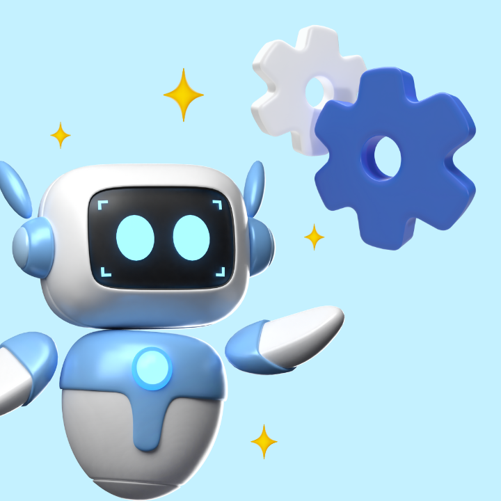

La IA es una subdisciplina de la iformatica, que requiere de conocimientos en programacion, estructuras de datos, estadistica, matematicas y logica, a que vamos con esto?, que tu eres capaz de crear paginas web o asistentes artificiales con un conocimiento un poco mas avanzado, adaptandolo a ti.
La IA no solo es un campo de estudio dentro de la informatica, sino que puede potenciar Tu aprendizaje y prductividad, plataformas como ChatGPT o GITHub Copilot te pueden sugerir codigo, explicarlo o ayudarte a corregir errores. A travez de los lenguajes de programacion puedes crear tu propio asistente, y tu decides si quieres compartirlo con el mundo o dejarlo solo para ti, si llegas a crear una, sacale el mayor provecho posible y no te limites a crear solo una, puedes hacer mucho mas que eso, puedes hacer apps de escaneo, protector de llaves, localizadores y mucho mas, todo gracias a los cursos y clases que has tomado.
Mas informacion sobre la pagina